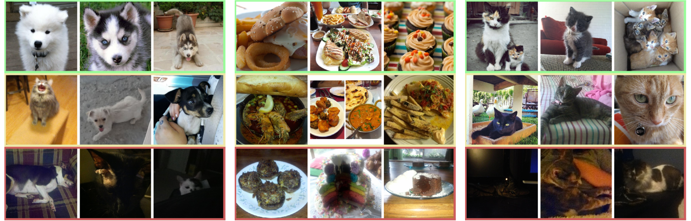
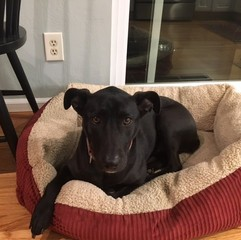
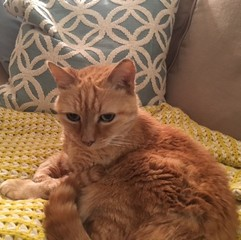
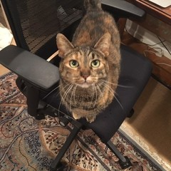

# Cats and Captions vs. Creators and the Clock
#### Comparing multimodal content to context in predicting relative popularity
[Jack Hessel](https://www.cs.cornell.edu/~jhessel), [Lillian Lee](https://www.cs.cornell.edu/home/llee/), [David Mimno](https://mimno.infosci.cornell.edu)
WWW 2017 ([paper](https://arxiv.org/abs/1703.01725))
---

*From top to bottom: examples of high scoring, okay scoring, and low scoring images from [/r/aww](https://www.reddit.com/r/aww/), [/r/FoodPorn](https://www.reddit.com/r/FoodPorn/), and [/r/cats](https://www.reddit.com/r/cats/).*
---
In this work, we designed several time-controlled experiments to
predict upvotes on image/text posts on Reddit. We focus on predicting
relative popularity between submissions made in quick succession
(e.g., 30 seconds). We find that we are able to successfully predict
relative popularity using computer vision and NLP techniques, and that
image/text content is generally more predictive of success than
identity-based features.
## Dataset and Downloads
Extracted image features, captions, social features, and pairing
information for all 6 subreddits can be downloaded [here (3.3GB)](https://drive.google.com/open?id=0BxzmcRaXS-ByYTBwMXBxWTJyc3c).
The readme of this dataset is available
[here](http://www.cs.cornell.edu/~jhessel/cats/README.md). Image data
is provided as pre-extracted features from
[ResNet50](https://arxiv.org/abs/1512.03385).
We have decided to not distribute raw jpegs because users might want
to delete images from imgur in the future, or imgur itself might
remove them for other reasons. However, if raw jpegs are needed for
computer vision research, there is an included script that will
re-download the raw files from imgur. We ask that anyone using this
script *keep the built in rate limit* of 1 second per request. As of
Feb. 2017, over 99.5% of images from each dataset are available
publicly on imgur.
Finally, if new extracted features (e.g., from a conv-net other than
ResNet50) from the *exact* image set used in the paper are needed for
comparison purposes, you may contact jhessel@cs.cornell.edu to request
new extracted features.
### Raw posts and comments-in-context
These files contain (non-deleted) posts from each community from
reddit's inception until Feb. 2014. Also, each post is augmented with
its associated comment tree. These files were used to create the
social features used in the study.
|Subreddit|Posts/Comments|
|---|---|
|[/r/pics](https://www.reddit.com/r/pics/)|[Posts/Comments (2.5GB)](https://drive.google.com/open?id=1WZS98OJdPWWDhyM-c0tfna-ZOUACqCFn)|
|[/r/aww](https://www.reddit.com/r/aww/)|[Posts/Comments (392MB)](https://drive.google.com/open?id=1RM2FFmJfLayQ1YfkMvjQfMynxPUrVUnr)|
|[/r/cats](https://www.reddit.com/r/cats/)|[Posts/Comments (53MB)](https://drive.google.com/open?id=1eQGppgyznU1-ks7qO1uBgAO0NpNMFOek)|
|[/r/FoodPorn](https://www.reddit.com/r/FoodPorn/)|[Posts/Comments (27MB)](https://drive.google.com/open?id=1dfx25lFMSKEM6N2QyhUVWpZl-YvL7691)|
|[/r/MakeupAddiction](https://www.reddit.com/r/MakeupAddiction/)|[Posts/Comments (146MB)](https://drive.google.com/open?id=11KnIdO_H8BepEr30fboZkrKC3VIv08m2)|
|[/r/RedditLaqueristas](https://www.reddit.com/r/RedditLaqueristas/)|[Posts/Comments (45MB)](https://drive.google.com/open?id=1ZJxsWb7BvtUP9xC0vS9bfNtiBXT7K-UQ)|
Update -- April 2018: data version 1.1! A small amount of missing data
that does not effect the results of this study has been discovered.
We did our best to re-fill the missing data (< 1% was missing), and
the above downloads are the more-complete versions. The social
features in the main dataset download are still the social features
used in the study, for replicability sake. More details are available
[here](http://www.cs.cornell.edu/~jhessel/reddit/gaps.html).
## Pretrained Image/Text Models
Our pretrained models [are available
here](https://github.com/jmhessel/catrank). Here are the model scores
for my own pets, alongside some captions. These are scored according
to the /r/aww model.

*Who says bulldogs can't be cute???*
- Score = 13.8/100

*My 20 year old little girl. Her sister passed away a while ago, but according to the vet, she's going as strong as ever! Reddit, meet Lizzy!*
- Score = 87.5/100

*Please don't sit on me!*
- Score = 27.4/100
## Citation
```
@inproceedings{hessel2017cats,
title={Cats and Captions vs. Creators and the Clock: Comparing Multimodal Content to Context in Predicting Relative Popularity},
author={Hessel, Jack and Lee, Lillian and Mimno, David},
booktitle={Proceedings of the 26th International Conference on World Wide Web},
year={2017},
organization={International World Wide Web Conferences Steering Committee}
}
```